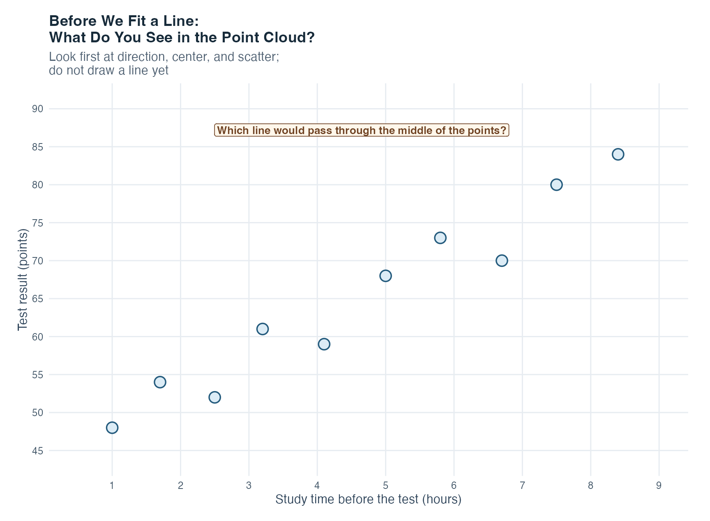
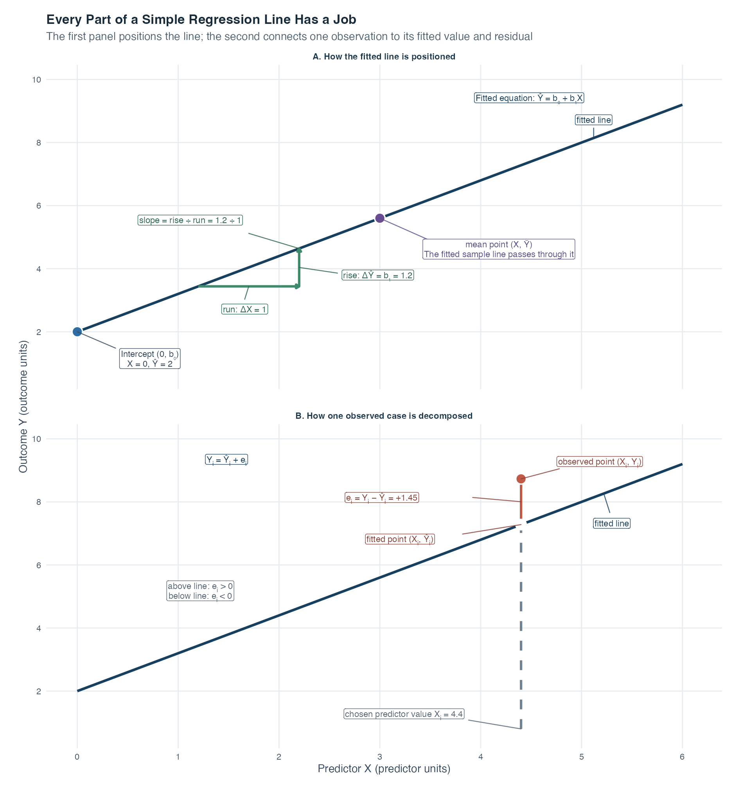
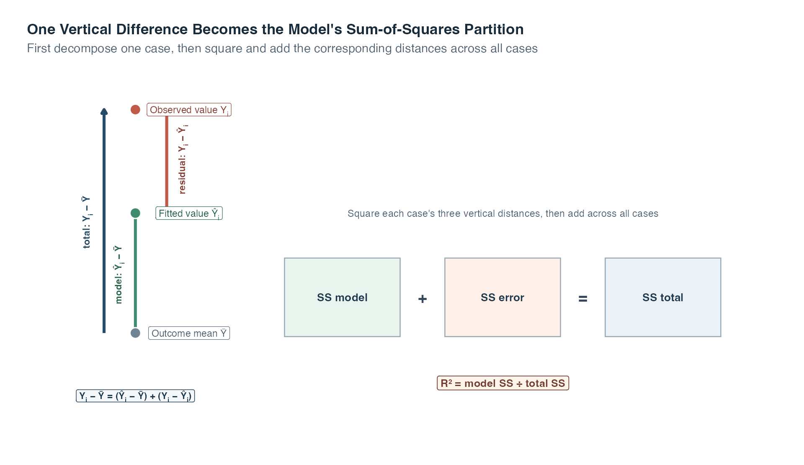
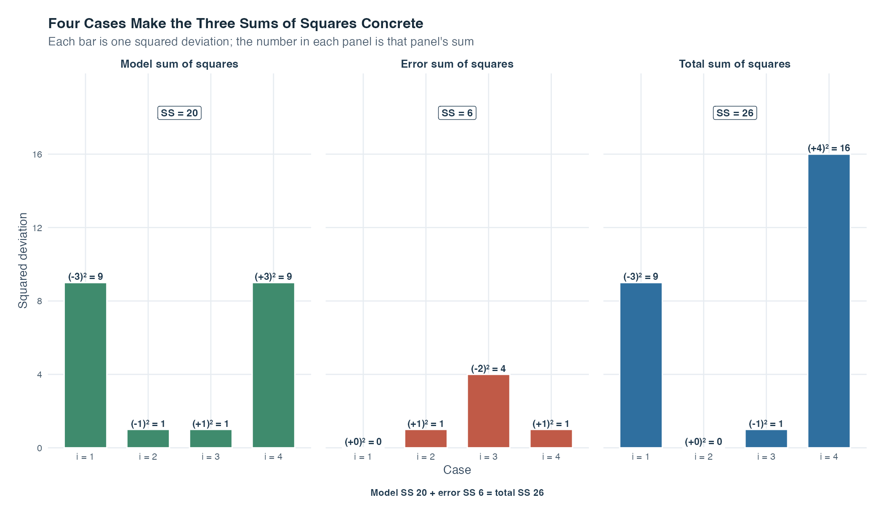
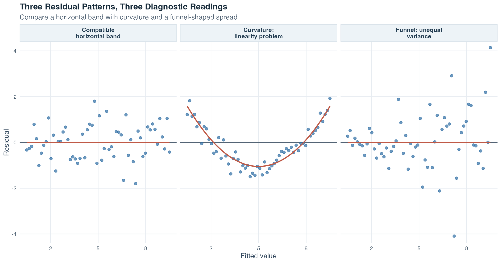

Exercise Sheet
Choose PDF for printing or Word for editing.
Introduction to Statistics · Topic 5
Topic 4 taught us to read a scatterplot and use correlation to summarize the direction and strength of a linear relationship. Correlation treats the two variables symmetrically. Simple linear regression takes the next step by giving them different roles: one variable becomes the predictor, and the other becomes the outcome whose fitted mean we want to describe.
Consider weekly guided-practice time and a statistical-reasoning score. The scatterplot may rise, but a researcher often wants to ask more than whether the association is positive. What mean score does the line fit for a chosen amount of practice? How much higher is the fitted mean when practice differs by one hour? And why can two students with the same practice time still have different observed scores? Regression turns the point cloud into a line so these questions can be answered in the variables’ original units.
The line also gives us a new way to learn from what it misses. Each observation has a vertical distance from the line, called a residual. Looking at the line and the residuals together separates the pattern represented by the model from the variation that remains. This prepares us for the later topics, where several predictors and group structures enter the same general modeling framework.
A fitted line is still a simplified model. It does not pass through every observation, it is not a promise about an individual outcome, and fitting it does not by itself show that changing the predictor would cause the outcome to change.
Guiding question: How can a cloud of paired observations become one fitted line, and what do the distances from that line tell us?
Simple linear regression summarizes the average linear relationship between one quantitative predictor and one quantitative outcome. The line describes the pattern represented by the model, while the residuals keep the remaining case-to-case variation visible.
By the end of this topic, you should be able to:
A predictor is the quantitative variable used to describe or predict differences in another variable. We write it as \(X\). An outcome is the quantitative variable being described or predicted, written as \(Y\). The word simple means that the model contains one predictor. It does not mean that the scientific question is unimportant or that all relevant influences have been captured.
Older texts also call \(X\) an independent variable and \(Y\) a dependent variable. Those labels can be misleading in an observational study because they may sound causal. Predictor and outcome describe the variables’ roles in the model without making a causal claim.
For a chosen predictor value \(x\), the model describes the conditional mean \(E(Y\mid X=x)\): the population average outcome among cases with that predictor value. The vertical bar is read as “given.” A straight-line population model is
\[ E(Y\mid X=x)=\beta_0+\beta_1x. \]
Equivalently, an individual outcome can be written as
\[ Y_i=\beta_0+\beta_1X_i+\varepsilon_i. \]
Where:
A parameter is a fixed but usually unknown population quantity. Thus, \(\beta_0\) and \(\beta_1\) are parameters. The population line is unknown because we normally observe only a sample.
Using sample data, we estimate the line as
\[ \widehat{Y}_i=\widehat{\beta}_0+\widehat{\beta}_1X_i. \]
The hat indicates an estimate. The value \(\widehat{Y}_i\), pronounced “Y hat,” is the fitted value: the outcome value placed on the estimated line for case \(i\).
The line describes the estimated mean outcome at each predictor value. It does not claim that every person with the same predictor value will have the same outcome.
The intercept \(\widehat{\beta}_0\) is the fitted mean outcome when \(X=0\). Its units are the outcome’s units. The intercept can be substantively useful when zero is possible and meaningful. When zero lies far outside the observed predictor range, the intercept is still needed to position the line but may have no sensible real-world interpretation.
The slope \(\widehat{\beta}_1\) is the fitted difference in the mean outcome associated with a one-unit difference in the predictor. Its units are outcome units per predictor unit.
Suppose a fitted equation is
\[ \widehat{\text{score}}=42+2.1\times\text{hours}. \]
The intercept says that the fitted mean score is 42 at zero hours. The slope says that students who differ by one weekly practice hour differ by 2.1 fitted score points on average. In observational data, wording such as “is associated with” or “differs by” is appropriate. Saying that one extra hour causes 2.1 additional points would require a design that supports that conclusion.
The sign of the slope supplies direction. A positive slope rises from left to right, a negative slope falls, and a zero slope is horizontal.
Imagine that several students spent different amounts of time studying for the same test. Each dot below represents one student: study time is on the horizontal axis, and the resulting test score is on the vertical axis. For the moment, there is deliberately no line. Begin by reading the points themselves.

Work through the picture in four small steps:
This gives the fitting rule an intuitive purpose. We are looking for the straight line that keeps the collection of squared vertical misses as small as possible. It will capture the center of the cloud, not every individual point. The next section names the fitted value and residual for one case, after which the anatomy figure shows exactly where the intercept and slope place that line.
Once the two estimated coefficients are known, inserting a case’s predictor value gives its fitted value. The observed outcome will usually not fall exactly on the line. Its vertical difference from the fitted value is the residual:
\[ e_i=Y_i-\widehat{Y}_i. \]
Where:
A positive residual means that the observed outcome is above the line. A negative residual means that it is below the line. Rearranging the equation shows the observation as two pieces:
\[ Y_i=\widehat{Y}_i+e_i. \]
A population error \(\varepsilon_i\) is unobserved because the true population line is unknown. A residual \(e_i\) is calculated after fitting a sample line and serves as an estimate of that error. The two ideas are related but not identical.
Residuals can reflect ordinary individual variation, measurement error in the outcome, omitted predictors, or a model form that does not match the relationship. The residual alone does not tell us which explanation is responsible.
The next figure separates two jobs that are often crowded into one picture. The first panel explains how the intercept and slope position the fitted line. The second holds one predictor value fixed and shows how an observed outcome is decomposed into its fitted value and residual.

In panel A, both axes name the variable role and remind us that the coefficient uses the original measurement units. The point \((0,b_0)\) marks the intercept. The green horizontal step changes \(X\) by exactly one unit, and the green vertical step is the corresponding change in the fitted outcome, \(b_1\). Dividing that rise by the one-unit run gives the slope. The marked point \((\bar X,\bar Y)\) shows another property of this fitted sample line: with an intercept included, it passes through the two sample means. The next section explains the fitting rule that produces this line.
Panel B follows one case \(i\). The dashed guide begins at its predictor value \(X_i=4.4\) and reaches the fitted point \((X_i,\widehat Y_i)\) on the line. The observed point \((X_i,Y_i)\) is above it. The orange distance is therefore \(e_i=Y_i-\widehat Y_i=+1.45\). A case below the line would have \(Y_i<\widehat Y_i\) and a negative residual. The identity \(Y_i=\widehat Y_i+e_i\) says that fitted and residual pieces reconstruct the observed outcome.
The figure labels the complete anatomy of this teaching line without making a causal claim or guaranteeing an individual’s outcome. The fitted line describes an estimated conditional mean. The residual shows how far one observed case lies from that mean, although the distance alone cannot explain why the difference occurred.
Many straight lines could be drawn through a scatterplot. Ordinary least squares, often abbreviated OLS, selects the coefficients that minimize the sum of squared residuals:
\[ SSE=\sum_{i=1}^{n}e_i^2 =\sum_{i=1}^{n}\left(Y_i-\widehat{Y}_i\right)^2. \]
Where:
Squaring prevents positive and negative residuals from canceling and gives more weight to large misses. OLS minimizes vertical outcome differences. It does not minimize horizontal distances or the shortest perpendicular distances to the line.
The resulting coefficients can be calculated as
\[ \widehat{\beta}_1 = \frac{\sum_{i=1}^{n}(X_i-\bar{X})(Y_i-\bar{Y})} {\sum_{i=1}^{n}(X_i-\bar{X})^2} = \frac{s_{XY}}{s_X^2} = r_{XY}\frac{s_Y}{s_X}, \]
and
\[ \widehat{\beta}_0=\bar{Y}-\widehat{\beta}_1\bar{X}. \]
Where:
These identities reveal an important connection to Topic 4. The slope is covariance relative to predictor variance. It is also the correlation rescaled into the variables’ original units. The intercept formula ensures that the fitted line passes through the point \((\bar{X},\bar{Y})\).
If the covariance and correlation are zero, the estimated slope is zero. Knowing \(X\) then does not improve the fitted value beyond using the same value \(\bar{Y}\) for every case.
An unstandardized slope changes when the measurement units change. Converting hours to minutes would produce a numerically smaller slope even though the underlying relationship stayed the same.
A standardized variable expresses each observation in standard-deviation units. If both \(X\) and \(Y\) are standardized before a simple regression, the intercept becomes 0 and the standardized slope becomes
\[ \widehat{\widetilde{\beta}}_1=r_{XY}. \]
Thus, in simple linear regression, a one-standard-deviation difference in \(X\) is associated with an average difference of \(r_{XY}\) standard deviations in \(Y\). Use the unstandardized slope when original units matter or when calculating fitted values. Use the standardized slope when a scale-free description is useful.
This equality is specific to simple regression with one predictor and an intercept. In multiple regression, a standardized coefficient generally does not equal a bivariate correlation.
For one observation, its deviation from the outcome mean can be separated into a part represented by the line and a residual part:
\[ Y_i-\bar{Y} = \left(\widehat{Y}_i-\bar{Y}\right) + \left(Y_i-\widehat{Y}_i\right). \]
Squaring and summing across all observations produces the OLS variation partition. This is an aggregate result, not a squared identity for each case. With an intercept, OLS makes the products of fitted deviations and residuals sum to zero, so the cross-term cancels only after all observations are combined:
\[ SS_{\text{total}} = SS_{\text{model}} + SS_{\text{error}}, \]
with
\[ SS_{\text{total}}=\sum_{i=1}^{n}(Y_i-\bar{Y})^2, \]
\[ SS_{\text{model}}=\sum_{i=1}^{n}(\widehat{Y}_i-\bar{Y})^2, \]
and
\[ SS_{\text{error}}=\sum_{i=1}^{n}(Y_i-\widehat{Y}_i)^2. \]
The algebra becomes easier to retain when the three distances are placed on the same outcome scale.

Read the left side from bottom to top. The outcome mean \(\bar Y\) is the common baseline. The green arrow reaches the fitted value and represents \(\widehat Y_i-\bar Y\). The orange arrow continues from the fitted value to the observed outcome and represents \(Y_i-\widehat Y_i\). Taken together, those two arrows cover the same vertical distance as the blue total arrow, \(Y_i-\bar Y\).
The boxes on the right move from one case to the complete fitted model. OLS squares each case’s model and residual distances and adds them across all cases. This produces \(SS_{\text{model}}+SS_{\text{error}}=SS_{\text{total}}\). The ratio \(SS_{\text{model}}/SS_{\text{total}}\) is \(R^2\), the share of sample outcome variation around the mean represented by the line.
The symbolic boxes deliberately do not show invented proportions. Their widths are layout devices, not data. The partition does not say that the model has explained a cause, that the unrepresented part is a mistake, or that any stated percentage of people was predicted correctly.
The symbolic relationship becomes more concrete in a deliberately small four-case example. Let \(X=(1,2,3,4)\) and \(Y=(2,5,4,9)\). Their least-squares line is \(\widehat Y=2X\), so the fitted values are \((2,4,6,8)\) and the outcome mean is \(\bar Y=5\). Every bar in the next figure is one deviation after it has been squared. Its label keeps the signed distance visible before squaring.

Read each panel vertically and then connect the panels horizontally. In the model panel, the four fitted values differ from the mean by \((-3,-1,+1,+3)\); squaring produces \((9,1,1,9)\) and therefore \(SS_{\text{model}}=20\). In the error panel, observed minus fitted gives residuals \((0,+1,-2,+1)\); their squares \((0,1,4,1)\) give \(SS_{\text{error}}=6\). In the total panel, the observed values differ from the mean by \((-3,0,-1,+4)\); their squares \((9,0,1,16)\) give \(SS_{\text{total}}=26\).
The last step is the whole-sample check: \(20+6=26\). Notice that the equality concerns the sums across all four cases. For case 3, for example, the signed deviations satisfy \(-1=(+1)+(-2)\), but \((-1)^2\) does not equal \((+1)^2+(-2)^2\). The cross-products cancel only after OLS combines all observations. This is why we first understand one case with signed distances and then verify the three sums across the entire sample.
The total sum of squares records how much observed outcomes vary around their mean. The model sum of squares records how much fitted values vary around that mean. The error sum of squares records the remaining squared residual variation.
The coefficient of determination, written \(R^2\), is the model share of total outcome variation:
\[ R^2 = \frac{SS_{\text{model}}}{SS_{\text{total}}} = 1-\frac{SS_{\text{error}}}{SS_{\text{total}}}. \]
With an intercept, \(R^2\) lies from 0 to 1 in the sample. For example, \(R^2=0.40\) means that the fitted line accounts for 40% of the sample variation in the outcome around its mean. It does not mean that the predictor causes 40% of the outcome or that 40% of people were predicted correctly.
In simple linear regression with an intercept,
\[ R^2=r_{XY}^2. \]
The same \(R^2\) also equals the squared correlation between the observed outcomes and their fitted values:
\[ R^2=r_{Y,\widehat{Y}}^2. \]
This second identity asks how closely the scores placed on the line track the outcomes that were actually observed. It does not mean that fitted and observed values are identical. Their vertical differences are precisely the residuals.
Squaring removes direction, so \(R^2\) is the same for correlations of \(+0.60\) and \(-0.60\). The slope or correlation must be consulted to recover direction.
The residual standard error estimates the standard deviation of the population errors. It expresses the typical residual scale in the outcome’s original units:
\[ s_e = \sqrt{ \frac{\sum_{i=1}^{n}e_i^2}{n-2} }. \]
The denominator is \(n-2\) because the simple model estimated two coefficients, the intercept and slope. The remaining \(n-2\) pieces of independent information are the residual degrees of freedom.
A smaller residual standard error means that observations are more tightly clustered around the fitted line, measured in outcome units. Its magnitude must be judged relative to the outcome’s scale and use. It is not the same as the standard error of the slope, which quantifies uncertainty in \(\widehat{\beta}_1\) across hypothetical repeated samples.
The fitted slope describes this sample. Statistical inference uses the sample and a probability model to reason about the unknown population slope \(\beta_1\).
The common two-sided hypotheses are
\[ \begin{aligned} H_0&:\beta_1=0,\\ H_1&:\beta_1\ne0. \end{aligned} \]
The null hypothesis says that the population conditional mean has no linear slope. The test statistic is
\[ t = \frac{\widehat{\beta}_1}{SE(\widehat{\beta}_1)}, \]
where
\[ SE(\widehat{\beta}_1) = \frac{s_e}{\sqrt{\sum_{i=1}^{n}(X_i-\bar{X})^2}}. \]
Under the stated regression assumptions and \(H_0\), this statistic is compared with a \(t\) distribution having \(n-2\) degrees of freedom. The p-value is the probability, assuming the null model and its conditions, of obtaining a test statistic at least as incompatible with zero as the one observed. It is not the probability that \(H_0\) is true.
A two-sided \(100(1-\alpha)\%\) confidence interval for the slope is
\[ \widehat{\beta}_1 \mathbin{\pm} t_{1-\alpha/2,\,n-2}SE(\widehat{\beta}_1). \]
The multiplier \(t_{1-\alpha/2,\,n-2}\) is the relevant cutoff from the \(t\) distribution. A 95% confidence procedure is designed so that, under the model, 95% of intervals constructed across repeated samples cover the fixed population slope. After one interval has been calculated, its endpoints are fixed. The frequentist statement concerns the procedure’s long-run performance.
For a matching two-sided test and interval, the decisions agree. At \(\alpha=0.05\), reject \(H_0:\beta_1=0\) exactly when the 95% confidence interval excludes zero. If the interval includes zero, we fail to reject the null hypothesis. That is not proof that the slope is exactly zero.
The course materials also ask whether the fitted model’s population coefficient of determination differs from zero. In simple regression with one predictor and an intercept, this is not a competing test of a different idea. It is a second way to test the same linear signal:
\[ \begin{aligned} H_0&:R^2_{\mathrm{population}}=0,\\ H_1&:R^2_{\mathrm{population}}>0. \end{aligned} \]
The model table divides the model and error sums of squares by their degrees of freedom. One predictor contributes one model degree of freedom, and estimating the intercept and slope leaves \(n-2\) error degrees of freedom. The resulting test statistic is
\[ \begin{aligned} F &= \frac{MS_{\text{model}}}{MS_{\text{error}}}\\[3pt] &= \frac{SS_{\text{model}}/1}{SS_{\text{error}}/(n-2)}. \end{aligned} \]
which is compared with an \(F\) distribution with \(1\) and \(n-2\) degrees of freedom. A large value means that the variation represented by the line is large relative to the residual variation left around it.
For a small numerical example, suppose \(n=12\), \(SS_{\text{model}}=72\), and \(SS_{\text{error}}=120\). Then
\[ F = \frac{72/1}{120/10} =6.00. \]
Software gives \(p\approx .034\) for \(F(1,10)=6.00\). At the 5% level, we would reject the zero-model null and conclude that the predictor contributes evidence of a nonzero linear relationship with the outcome in the population, under the model conditions. This conclusion does not say that the relationship is causal or that the model fits every individual well.
With exactly one predictor, the model \(F\) test and the two-sided slope \(t\) test must agree:
\[ F=t^2. \]
Here, \(\sqrt{6.00}\approx2.45\), so the matching slope test would use \(|t|\approx2.45\) and produce the same p-value. This equivalence is valuable as a self-check. It also explains why both a coefficient table and a model table can answer the same overall question in simple regression. In multiple regression, that equivalence no longer holds for the test of the model as a whole because several slopes are tested together.
Statistical software often reports two complementary tables. A coefficient table gives the intercept and slope estimates, their standard errors, \(t\) statistics, p-values, and confidence intervals. A regression model table, sometimes displayed as an analysis-of-variance table, organizes the variation partition into model and residual rows.
Dividing a sum of squares by its degrees of freedom gives a mean square. The model’s mean square divided by the residual mean square gives the model \(F\) statistic:
\[ F = \frac{MS_{\text{model}}}{MS_{\text{error}}}. \]
With one predictor, the global null hypothesis tested by \(F\) is the same as \(H_0:\beta_1=0\). The two tests therefore give the same p-value, and
\[ F=t^2. \]
This connection prepares the way for multiple regression and analysis of variance, where the model table can test several coefficients together.
A point prediction inserts a chosen predictor value \(x_0\) into the fitted equation:
\[ \widehat{Y}_0 = \widehat{\beta}_0+\widehat{\beta}_1x_0. \]
When \(x_0\) falls inside the observed predictor range, the calculation is interpolation. It uses the line where the data provide direct support. Even then, the fitted value is an estimated conditional mean, not a guaranteed outcome for an individual. Residual variation remains.
When \(x_0\) lies outside the observed range, the calculation is extrapolation. The equation still returns a number, but the data do not show whether the same straight-line pattern continues there. Predictions become increasingly vulnerable to changes in shape, boundaries, or population composition beyond the measured range.
Always report the observed predictor range. Treat a value outside that range as extrapolation, even when software prints it without a warning.
A regression assumption is a condition under which a calculation or inference has its stated interpretation. Diagnostics can reveal important conflicts with those conditions, but a quiet plot cannot prove that every assumption is true.
| Condition | Plain-language meaning | What to inspect |
|---|---|---|
| Linear conditional mean | The mean outcome changes approximately as a straight line across the predictor range | Begin with the raw scatterplot; then check whether residuals show a curve |
| Independent errors | One case’s unexplained deviation does not supply information about another’s | Examine how cases were sampled, clustered, paired, or repeatedly measured |
| Homoskedasticity | The conditional error variance is approximately constant across fitted values | Look for a residual band with similar vertical spread rather than a funnel shape |
| Approximately normal conditional errors for the stated small-sample inference | At each predictor value, errors are compatible with a normal distribution | Inspect a residual Q-Q plot and investigate strong systematic departures |
| Adequate model specification | Important variables and relevant shapes have not been ignored when the intended interpretation depends on them | Use design knowledge, theory, and later multiple-regression tools; no single plot can confirm this |
| Appropriate measurement | Predictor and outcome values meaningfully represent the intended quantities | Check instrument quality, coding, range restrictions, and possible measurement error |
The table separates conditions that can be explored graphically from conditions that depend on design and measurement. The scatterplot, residual plot, and Q-Q plot can reveal visible conflicts with linear shape, constant spread, or approximate conditional normality. They cannot tell us whether observations were sampled independently, whether an important variable was omitted, or whether a score measures the intended construct well. Those questions require knowledge of how the data were created.
A residual-versus-fitted plot places fitted values on the horizontal axis and residuals on the vertical axis. A roughly patternless horizontal band around zero is compatible with linearity and constant residual variance. A curve suggests that a straight line misses systematic shape. A fan-shaped spread suggests unequal variance, also called heteroskedasticity. Equal conditional error variance is called homoskedasticity.
These three patterns are easier to distinguish when they share the same axes. The first panel is compatible with the intended linear, constant-variance model. The second reveals systematic curvature even though residuals still occur on both sides of zero. The third remains centered near zero but widens as fitted values increase, so its problem is changing variance rather than mean shape.

A normal Q-Q plot compares ordered residuals with the positions expected from a normal distribution. Those expected positions are called quantiles. Points near the reference line are compatible with approximate normality. Systematic curvature or extreme end departures prompt investigation. Neither the predictor nor the outcome needs to have a normal marginal distribution, meaning the distribution of that variable considered by itself, merely because this regression uses a normal-error model for inference.
An outlier in this context has an outcome far from its fitted value, so it has a large residual. A high-leverage case has a predictor value far from the predictor center and can pull strongly on the fitted line. An influential case changes an important fitted result noticeably when included versus omitted. A case can have one of these properties without having all three.
A standardized residual expresses a residual on an approximate standard-deviation scale, making residual size easier to compare across cases. Cook’s distance is one diagnostic that combines residual size and leverage to rank cases for closer inspection. This lesson uses it only as an investigation aid. No single numerical threshold makes a case invalid, and an unusual case may be scientifically important.
For any flagged case, return to the record and context. Check data entry, measurement conditions, population membership, and the sensitivity of the conclusion. A sensitivity analysis repeats the analysis under a defensible alternative, such as with and without a questionable record, to show whether the conclusion depends heavily on that choice. Correct an established error. When no error is established, report the case and the sensitivity analysis rather than deleting it merely to improve the model.
A measurement error is the difference between a measured value and the quantity the instrument intends to measure. This matters in psychology and other social sciences because many constructs, such as motivation or anxiety, are not observed directly. Such an unobserved construct is called a latent variable and is represented through indicators or test scores.
Under the classical model in which predictor measurement error is independent of the true predictor and other errors, the simple-regression slope is generally pulled toward zero. This is called attenuation. A weak estimated slope can therefore reflect noisy predictor measurement as well as a weak underlying association. The caution does not mean that every measurement-error process produces the same bias.
Simple regression turns Topic 4’s correlation into a model with predictions, residuals, fit measures, and inference. The residuals introduced here become the foundation for partial correlation, while the coefficient and model-table logic extends directly to multiple regression and analysis of variance.
Its central purpose is easy to lose among the formulas, so return to the first point cloud. Regression asks whether one straight line can give a useful description of how the mean outcome differs across values of one predictor. The intercept positions that line, and the slope translates its direction into original units. A statement such as “the fitted mean score is 2.1 points higher for each additional hour” is more concrete than saying only that two variables are positively correlated.
The method is useful precisely because it does not pretend that every point lies on the line. For each case, the fitted value represents the part placed on the line, while the residual preserves the person’s observed departure from it. Ordinary least squares provides one transparent rule for choosing among all possible lines: choose the intercept and slope that make the sum of squared vertical residuals as small as possible. The sum-of-squares partition then asks how much outcome variation the line represents and how much remains around it.
That combination answers three different questions that should never be collapsed into one:
This is why regression matters in psychology and the social sciences. Researchers often want to connect a quantitative characteristic or exposure with a quantitative outcome: practice time with performance, a scale score with well-being, or age with a measured response. Regression puts the relationship into interpretable units, shows uncertainty rather than hiding it, and makes the unexplained variation visible. It still does not create causality. The study design, measurement quality, plausible omitted variables, and model diagnostics determine how far the interpretation may go.
If you keep one mental picture, keep this one: point cloud → fitted line → vertical residuals → variation partition → uncertainty about the slope. That sequence is the essence of simple linear regression. It closes this topic as a complete method and also becomes the grammar of later models. Partial correlation asks what remains of a relationship after another variable is removed. Multiple regression places several predictors into the same fitted equation. Analysis of variance uses the same model and sum-of-squares logic when predictors represent groups. Understanding one line well gives you the first complete version of a modeling idea that will keep returning throughout the course.
We reuse the simulation framework introduced in Topic 1 to create 160 artificial first-year students. A rising scatterplot may suggest that practice and reasoning move together, but regression becomes useful only when we can translate that pattern into a fitted line and understand what the line leaves unexplained. We therefore ask whether weekly guided-practice time is linearly associated with a statistical-reasoning score. This is an observational teaching scenario: practice time is recorded rather than assigned, so the regression cannot show that additional practice causes a higher score.
Three questions will guide the fitted analysis:
What mean reasoning score does the line fit at a chosen amount of practice? How many fitted score points correspond to a one-hour difference in weekly practice? What do the residuals reveal when an artificial student’s observed score does not sit on the line?
Together, these questions keep prediction, association, and individual variation separate.
For each simulated student, we record:
| Variable | Role and scale | Meaning |
|---|---|---|
participant_id |
Nominal identifier | Distinguishes rows and is never treated as a quantity |
study_hours |
Quantitative predictor, in hours per week | Time spent in guided statistical practice during a typical week |
assessment_score |
Quantitative outcome, in score points | Result on a statistical-reasoning assessment |
Read the table as a role map for the analysis. The identifier keeps rows distinct but never enters the equation. Guided-practice hours belong on the horizontal axis because they are the predictor. Statistical-reasoning score belongs on the vertical axis because it is the outcome whose conditional mean we model, meaning the average score the line fits at a chosen practice value. Naming these roles before fitting the line makes the later slope units, residual direction, and prediction statements much easier to interpret.
As Topic 1 explained, the computer uses a fixed seed so the dataset is reproducible: rebuilding the page recreates the same artificial values. It generates practice times from 0 to 16 hours and combines each value with a linear mean pattern plus normally generated individual variation. Scores are rounded to one decimal place before fitting the model. These choices create an example with known structure and carry no claim about real students.
Step 1: Inspect the Rows and Observed Range
Begin with the data rather than the model output. The interactive table contains only variables that have already been defined.
Each row represents one artificial student and contains one predictor-outcome pair. Search and pagination help inspect the full dataset, but they do not change which rows enter the model. Reading across a row shows the raw ingredients of one fitted value and one residual. Reading down a column shows the observed range and variation of one variable.
Practice time ranges from 0.0 to 15.8 hours, and scores range from 31.4 to 86.5 points. Both variables are quantitative, every row has both values, and zero practice hours occurs in the observed data. This makes the intercept interpretable within this simulated sample.
Step 2: Draw the Scatterplot before Reading Coefficients
The first model question is graphical: does a straight line appear to be a reasonable summary of the conditional mean?
The point cloud rises from left to right, so a positive slope is plausible. The vertical scatter around the line also matters: students with the same practice time do not all have the same score. The orange segment belongs to participant S086 and shows the difference between that student’s observed and fitted scores.
The plot supports continuing with a linear model, but we will inspect residuals directly before reaching a final diagnostic judgment.
Step 3: Estimate and Interpret the Line
The fitted equation is
\[ \widehat{\text{score}} = 42.48 + 2.04\times\text{hours}. \]
The fitted mean score at zero weekly practice hours is 42.48 points. For each additional hour of weekly guided practice, the fitted mean score is 2.04 points higher. Because practice time was observed rather than assigned, this is an association.
The slope can be recovered in three equivalent unstandardized ways, while standardizing both variables returns the correlation.
| Calculation | Result |
|---|---|
| Direct model estimate | 2.0417 |
| Covariance divided by predictor variance | 2.0417 |
| Correlation times the SD ratio | 2.0417 |
| Standardized simple-regression slope | 0.8519 |
The first three rows all report the unstandardized slope in score points per hour. They begin from different summaries but must agree: the fitted model estimates the slope directly, covariance divided by predictor variance gives the same result, and correlation multiplied by the ratio of standard deviations restores the original units. The last row is deliberately different in scale. It standardizes both variables, so its result equals Pearson’s \(r\) and is measured in standard deviations rather than score points per hour.
The tiny displayed differences are only rounding. At full precision,
\[ \widehat{\beta}_1 = \frac{s_{XY}}{s_X^2} = r_{XY}\frac{s_Y}{s_X}. \]
The standardized slope and correlation are both 0.852. Thus, a one-standard-deviation difference in practice time is associated with a 0.852 standard-deviation difference in reasoning score on average.
Step 4: Verify Why This Is the Least-Squares Line
To make the fitting rule visible, compare the estimated line with one flatter and one steeper candidate. Ordinary least squares (OLS) is the fitting rule that chooses the line with the smallest total of squared vertical residuals. All three lines pass through the sample means, so their slopes provide the important difference.
| Candidate line | Intercept | Slope | Sum of squared residuals |
|---|---|---|---|
| Least-squares line | 42.48 | 2.04 | 5,521.3 |
| Flatter candidate | 49.45 | 1.23 | 7,859.4 |
| Steeper candidate | 35.52 | 2.86 | 7,859.4 |
The figure gives the visual comparison and the table gives the numerical one. The flatter candidate tends to miss high-\(X\) observations above the line and low-\(X\) observations below it. The steeper candidate tends to miss in the opposite pattern. Squaring and adding all vertical misses produces the sum of squared errors (\(SSE\)) shown in the table. The least-squares row is smallest because its intercept and slope were chosen specifically to minimize that total.
The least-squares line has the smallest \(SSE\) among these candidates and, by the OLS solution, among all possible intercept-slope combinations. This does not mean every residual is small or that the model assumptions are guaranteed.
Step 5: Calculate Fitted Values and Residuals
The next table applies the fitted equation to the first eight students. Each residual is observed score minus fitted score.
| Participant ID | Guided practice per week (hours) | Statistical reasoning score | Fitted score | Residual |
|---|---|---|---|---|
| S001 | 14.60 | 83.20 | 72.29 | 10.91 |
| S002 | 15.00 | 75.90 | 73.11 | 2.79 |
| S003 | 4.60 | 52.50 | 51.88 | 0.62 |
| S004 | 13.30 | 69.80 | 69.64 | 0.16 |
| S005 | 10.30 | 56.40 | 63.51 | -7.11 |
| S006 | 8.30 | 63.80 | 59.43 | 4.37 |
| S007 | 11.80 | 66.00 | 66.58 | -0.58 |
| S008 | 2.20 | 45.50 | 46.98 | -1.48 |
For participant S086, the model uses 9.0 hours to fit a score of 60.86. The observed score is 70.7, so
\[ e_i = 70.7 - 60.86 = 9.84. \]
The positive residual means that this observed score lies 9.84 points above the line.
The same case also illustrates the observation-level variation partition.
| Component | Score points |
|---|---|
| Observed deviation from the outcome mean | 10.80 |
| Deviation represented by the fitted line | 0.96 |
| Residual | 9.84 |
The first row is the case’s complete distance from the overall outcome mean. The second row is the part represented by moving from that mean to the fitted line. The third row is the residual distance from the fitted line to the observed score. Adding the second and third values, with their signs, reproduces the first. Applying this split to every case creates three columns of signed distances. Squaring and summing each column gives the three sums of squares; the model and error sums add to the total only at the full-sample level, where the OLS cross-product term is zero.
The model-represented deviation plus the residual equals the observed deviation from the sample outcome mean. The whole-sample sums of squares apply this logic across all 160 observations.
Step 6: Quantify Model Fit
The regression model table partitions total outcome variation into the part represented by the line and the residual part.
| Source | df | Sum of squares | Mean square | F value | p-value |
|---|---|---|---|---|---|
| Regression | 1 | 14,613.32 | 14,613.32 | 418.18 | < .001 |
| Residual | 158 | 5,521.30 | 34.94 | ||
| Total | 159 | 20,134.62 |
Read the rows as a partition. The Regression row contains variation represented by the fitted line. The Residual row contains variation left around that line. The Total row contains all outcome variation around the sample mean and therefore equals the first two sums of squares combined. Read the columns as the next calculation steps: degrees of freedom count available information, each mean square divides its sum of squares by its degrees of freedom, and the \(F\) statistic compares the regression mean square with the residual mean square.
The displayed sums satisfy
\[ 20,134.62 = 14,613.32 + 5,521.30. \]
The coefficient of determination is
\[ R^2 = \frac{14,613.32} {20,134.62} = 0.726. \]
The line accounts for 72.6% of the sample variation in reasoning scores around their mean. The correlation is 0.852, and squaring it gives 0.726, confirming \(R^2=r^2\) for this simple regression.
The residual standard error is 5.91 score points on 158 residual degrees of freedom. This is the estimated residual spread around the line, expressed in score points.
Step 7: Read the Coefficient Inference
The coefficient table adds uncertainty measures to the fitted estimates.
| Term | Estimate | Standard error | t value | p-value | 95% CI lower | 95% CI upper |
|---|---|---|---|---|---|---|
| Intercept | 42.484 | 0.972 | 43.73 | < .001 | 40.565 | 44.403 |
| Guided practice hours | 2.042 | 0.100 | 20.45 | < .001 | 1.845 | 2.239 |
Each row concerns one coefficient. The Estimate column supplies the fitted intercept or slope. Its standard error describes how much that estimate would vary across repeated samples under the model. Dividing estimate by standard error gives the \(t\) value, while the p-value and confidence limits translate that standardized result into evidence and a range of compatible parameter values. The intercept row answers a question about the fitted mean at zero hours. The guided-practice row answers this topic’s main question about the population slope.
For the slope,
\[ t = \frac{2.042} {0.100} = 20.45 \]
with 158 degrees of freedom and a p-value below .001. Under the null model and regression conditions, a statistic at least this far from zero would be very unusual. The 95% confidence interval for the population slope runs from 1.845 to 2.239 score points per weekly hour. It excludes zero, so the matching two-sided test rejects \(H_0:\beta_1=0\) at the 5% level.
The model table reports \(F=418.18\). Squaring the slope’s \(t\) statistic gives the same result apart from displayed rounding. With one predictor, these are two presentations of the same test.
Statistical evidence against a zero slope does not settle causality, practical importance, model adequacy, or the quality of future predictions. We address model adequacy in Step 9.
Step 8: Make an In-Range Prediction and Expose an Extrapolation
Insert 10 weekly hours into the fitted line:
\[ \widehat{\text{score}} = 42.48 + 2.04\times10 = 62.90. \]
Ten hours lies inside the observed 0.0 to 15.8 hour range. The value 62.90 is the fitted conditional mean score at 10 hours, not a guaranteed individual score.
The same equation also returns a fitted score for 20 hours, but 20 exceeds every observed practice value.
| Guided practice per week (hours) | Fitted score | Status |
|---|---|---|
| 10.0 | 62.90 | Within observed range |
| 20.0 | 83.32 | Outside observed range |
The Status column is as important as the fitted number. Ten hours is interpolation because observed students support that part of the line. Twenty hours is extrapolation because it lies beyond the maximum observed practice time. The two rows use the same arithmetic, but only one is anchored within the observed predictor range.
In the figure, the solid line runs only across predictor values represented by data. The shaded region begins where those observations end, and the dashed line is merely the equation continuing. The extrapolated number is mathematically defined but substantively fragile. We have no observations showing that the same slope continues from 15.8 to 20 hours.
Step 9: Diagnose the Fitted Model
First inspect residuals against fitted values. We want an approximately horizontal band around zero with no strong curve and no systematic widening or narrowing.
This simulated residual plot shows no obvious curve or pronounced funnel. The smooth line stays near zero and the vertical spread is broadly similar across the fitted range. That evidence is compatible with the linearity and constant-variance conditions, but it does not prove them.
Next inspect the conditional-error shape through a normal quantile-quantile plot, usually shortened to a normal Q-Q plot. It compares ordered residuals with the ordered values expected from a normal distribution.
Most points follow the reference line, with modest end deviations that are unsurprising in a finite sample. There is no strong graphical contradiction of the normal-error condition used for the reported \(t\) and \(F\) inference.
Finally, inspect unusual combinations of residual size and predictor position. The plot and table rank cases by Cook’s distance without imposing a deletion threshold.
Position and size encode different diagnostic ideas. Moving horizontally to the right means a case has greater leverage because its predictor value is farther from the predictor center. Moving vertically away from zero means a larger standardized residual. Point size represents Cook’s distance, so a large point combines enough leverage and residual information to deserve closer inspection. A label means “investigate this row,” not “delete this row.”
| Participant ID | Guided practice per week (hours) | Statistical reasoning score | Standardized residual | Leverage | Cook’s distance |
|---|---|---|---|---|---|
| S038 | 3.300 | 66.700 | 2.978 | 0.014 | 0.063 |
| S035 | 0.100 | 31.400 | -1.935 | 0.027 | 0.051 |
| S110 | 0.000 | 31.600 | -1.867 | 0.027 | 0.048 |
| S024 | 15.100 | 86.500 | 2.252 | 0.019 | 0.048 |
| S094 | 14.900 | 85.000 | 2.064 | 0.018 | 0.039 |
The table supplies the exact values behind the largest plotted points. It is sorted by Cook’s distance, but rank alone does not diagnose an error. Compare the practice value with leverage, compare the observed and fitted relationship through the standardized residual, and use Cook’s distance to decide which records deserve contextual review first.
Because these values were generated by a known, clean recipe, there is no data-entry error to correct. None should be removed merely because it is ranked near the top. With real data, the same display would direct us back to the records, measurement conditions, and a sensitivity analysis.
Step 10: Answer the Research Question Carefully
In this simulated cohort of 160 students, weekly guided-practice time had a positive linear association with statistical-reasoning score. The fitted mean score was 2.04 points higher per additional weekly hour, 95% CI [1.84, 2.24], with a p-value below .001. The model represented 72.6% of the sample variation in scores, and the residual standard error was 5.91 points. The diagnostic plots did not show an obvious conflict with the fitted linear model.
This conclusion is deliberately limited. The cohort is simulated, the values are not empirical evidence, and practice time was not randomized. Even in a real observational cohort with the same results, omitted variables such as prior preparation could contribute to the association. Measurement error in practice time could also attenuate the slope under classical measurement-error conditions.
The simulation was constructed with a linear mean, complete values, and normally generated variation. Successful diagnostics therefore partly reflect the recipe and do not show how the model would behave in a real population.
The ten steps applied the Theory section in its recommended order: identify the predictor and outcome, inspect the point cloud, fit the least-squares line, calculate fitted values and residuals, partition variation, read coefficient uncertainty, distinguish interpolation from extrapolation, and inspect model diagnostics. You can now see why covariance and correlation came before simple regression. Topic 4 first taught us to look at paired cases and ask whether the two variables move together. Covariance recorded the direction of that joint movement. Pearson’s correlation then removed the measurement units and summarized how tightly the point cloud followed a straight-line pattern. Those were not separate calculations to learn and forget. They are the raw ingredients of the regression slope:
\[ \widehat{\beta}_1 = \frac{s_{XY}}{s_X^2} = r_{XY}\frac{s_Y}{s_X}. \]
Read the two versions from left to right. Covariance says how \(X\) and \(Y\) vary together, and dividing by the variance of \(X\) turns that joint variation into outcome units per predictor unit. The correlation version begins with the same unit-free linear association, then multiplies by \(s_Y/s_X\) to return to the original score-points-per-hour scale. In other words, regression does not abandon correlation. It gives that association a direction in the model and restores units so that the fitted line can answer practical questions.
That direction is important. Correlation is symmetric: the correlation of practice time with score is the same as the correlation of score with practice time. Regression assigns different roles. Here, practice time is the predictor and score is the outcome, so the line minimizes vertical score residuals and predicts a mean score from a chosen practice value. Reversing those roles would fit a different line and answer a different question. The roles come from the research question, not from the coefficient alone.
The connection continues through model fit. In a simple regression with an intercept, the standardized slope equals \(r\), and \(R^2=r^2\). Correlation therefore supplies the direction and standardized linear strength, while \(R^2\) expresses how much of the sample outcome variation the fitted line represents. Regression then adds what correlation by itself could not provide: an intercept, fitted values, residuals, original-unit predictions, a residual standard error, coefficient uncertainty, and diagnostic checks.
Our simulated study makes the sequence concrete. The rising scatterplot suggested positive joint variation. The positive correlation summarized that pattern without units. The positive slope translated it into fitted score points per weekly hour. Each vertical residual then showed where one artificial student’s score differed from the fitted mean, and all residuals together determined the model’s remaining variation. The coefficient table asked whether the population slope could plausibly be zero under the model, while the residual and Q-Q plots asked whether the straight-line inference was a reasonable description of the generated data.
One final limit prepares the next topic. A fitted simple-regression slope still combines every path that can produce the observed association. If prior preparation is related to both practice time and reasoning score, this one-predictor line cannot separate that background path from the relationship of primary interest. Partial correlation takes the residual idea from this topic and asks what association remains after a third variable has been taken into account. That is the next logical step: first understand two variables together, then learn how the picture changes when a third variable enters.
Choose PDF for printing or Word for editing.
Choose PDF for printing or Word for editing.
Simple linear regression models the mean of one quantitative outcome from one predictor. It does not predict every case exactly. The fitted line describes the conditional mean, while each residual records one case’s observed-minus-fitted difference.
The population model is
\[ Y_i=\beta_0+\beta_1X_i+\varepsilon_i, \]
and the sample fitted line is
\[ \widehat{Y}_i=b_0+b_1X_i. \]
| Quantity | Meaning |
|---|---|
| \(b_0\) | Fitted mean outcome when \(X=0\); interpret only when zero is meaningful and supported by the data |
| \(b_1\) | Fitted change in mean outcome for a one-unit increase in \(X\) |
| \(\widehat{Y}_i\) | Fitted mean outcome at case \(i\)’s predictor value |
| \(e_i=Y_i-\widehat{Y}_i\) | Vertical residual; positive means the observed outcome lies above the line |
| \(R^2\) | Proportion of sample outcome variation represented by the fitted line |
| Residual standard error | Typical remaining outcome variation around the fitted line, in outcome units |
The slope connects directly to Topic 4:
\[ b_1=\frac{s_{XY}}{s_X^2}=r_{XY}\frac{s_Y}{s_X}. \]
Covariance supplies joint movement, division by predictor variance turns it into outcome units per predictor unit, and the correlation form shows how the unit-free association is returned to the original scales. In simple regression with an intercept, \(R^2=r^2\).
A slope confidence interval and test use
\[ t=\frac{b_1-0}{SE(b_1)}, \qquad df=n-2. \]
Before trusting that inference, check whether a straight line is an adequate summary, whether residual spread is reasonably stable, whether the error distribution is compatible with the model, and whether cases are independent under the design. A residual-versus-fitted plot checks form and spread. A normal Q-Q plot checks the broad error-shape assumption. Leverage and Cook’s distance identify cases for investigation, not automatic deletion.
Topic 6 uses the residual idea twice: it adjusts both focal variables for a third variable and correlates what remains. That makes partial correlation the natural next step after the one-predictor line.